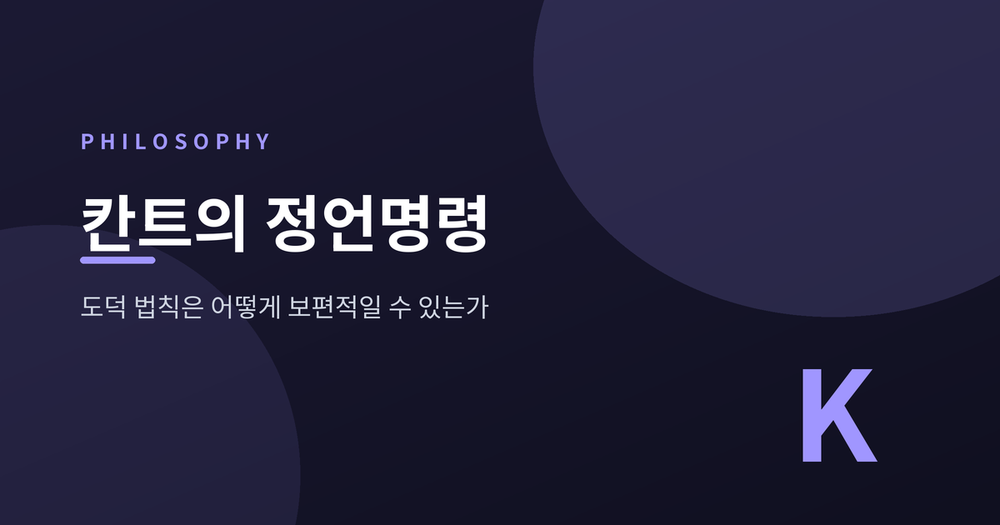
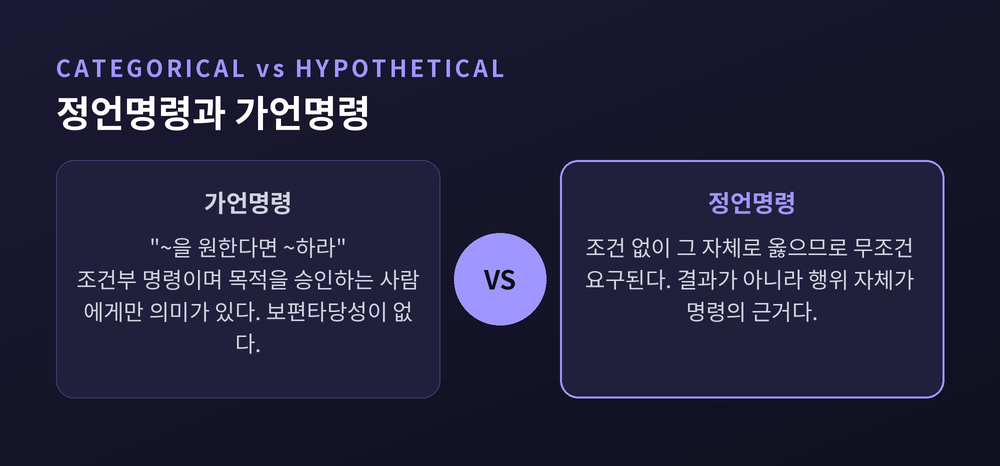
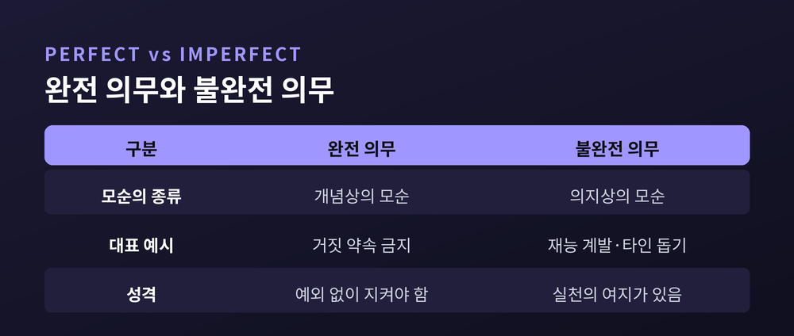

칸트의 정언명령 — 도덕 법칙은 어떻게 보편적일 수 있는가

이번 글에서는 칸트의 정언명령을 정리해 보겠습니다. 도덕이 사람마다 다르고 상황마다 흔들리는 것처럼 보이는데, 칸트는 왜 도덕 법칙이 '보편적'일 수 있다고 말했는지를 따라가 봅니다. 개념이 다소 딱딱하지만, 하나씩 짚으면 어렵지 않습니다.
칸트가 던진 질문
칸트는 1785년 『도덕형이상학 정초』에서 하나의 질문에 답하려 했습니다.
"도덕 법칙은 어떻게 보편적일 수 있는가."
취향은 사람마다 다릅니다. 이익도 상황마다 다릅니다. 그런데 도덕이 그런 것들에 좌우된다면, 그것은 이미 도덕이 아닙니다.
칸트는 도덕의 최고 원리를 실천 이성의 원리로 보았습니다. 그리고 그것을 정언명령이라 불렀습니다. 우리의 구체적인 의무들은 모두 이 하나의 원리에서 정당화됩니다.
그가 찾으려 한 것은 모든 시대, 모든 문화의 인간에게 똑같이 적용되는 선험적 원리였습니다. 경험에서 끌어온 규칙이 아니라, 이성 자체가 세우는 법칙 말입니다.
선의지 — 오직 하나만이 무조건 선하다
『정초』의 첫 문장은 단호합니다. 이 세상에서 무조건적으로 선한 것은 오직 '선의지' 하나뿐이라는 것입니다.
재능도, 부도, 심지어 행복도 그 자체로는 선하지 않습니다. 나쁜 의지가 쥐면 얼마든지 해로워집니다.
선의지는 결과가 어긋나도 그 가치를 잃지 않습니다. 행위자가 '의무로부터' 행했다면, 뜻대로 되지 않았어도 도덕적 가치는 남습니다.
여기서 칸트의 유명한 구분이 나옵니다. '의무에 맞게' 한 행동과 '의무로부터' 한 행동은 다릅니다. 장사꾼이 정직한 이유가 단지 평판 때문이라면, 그 정직은 의무에 맞을 뿐 도덕적 가치는 없습니다. 결과가 아니라 동기가 도덕을 만듭니다.

정언명령과 가언명령은 무엇이 다른가
명령에는 두 종류가 있습니다.
가언명령은 조건을 답니다. "건강해지고 싶다면 운동하라." 목적을 승인하는 사람에게만 의미가 있습니다. 그 목적을 버리면 명령도 사라집니다. 그래서 보편타당성이 없습니다.
정언명령은 조건을 달지 않습니다. 어떤 결과를 위해서가 아니라, 그 행위 자체가 옳으므로 무조건 요구됩니다.
"거짓 약속을 하지 말라"는 이유가 붙지 않습니다. 들키면 손해라서가 아닙니다. 그 자체로 그르기 때문입니다. 정언명령은 바로 이런 무조건적 명령의 형식을 가리킵니다.
준칙, 그리고 보편법칙 정식
정언명령을 이해하려면 '준칙(maxim)'이라는 말을 먼저 알아야 합니다. 준칙은 내가 어떤 상황에서 어떻게 행동하겠다는 나의 주관적 원리입니다. 말하자면 내 행동의 속마음 규칙입니다.
칸트의 첫 번째 정식, 보편법칙 정식은 이렇습니다.
"네 의지의 준칙이 동시에 보편적 법칙이 되기를 네가 의욕할 수 있는, 오직 그런 준칙에 따라서만 행위하라."
풀어 쓰면 이렇습니다. 내가 지금 따르려는 규칙을, 모든 사람이 똑같이 따라도 모순이 생기지 않는가. 그 물음을 통과한 준칙만 도덕적이라는 것입니다.
칸트는 하나의 정언명령을 여러 각도에서 표현했습니다. 형식을 말하는 보편법칙 정식, 내용을 말하는 인간성 정식, 그 원천을 말하는 자율성 정식과 목적의 왕국 정식입니다.
인간성 정식 — 사람을 수단으로만 쓰지 말라
두 번째 정식은 조금 더 따뜻하게 들립니다.
"너 자신이든 타인이든, 인간성을 언제나 동시에 목적으로 대우하고 결코 한낱 수단으로만 대우하지 말라."
여기서 핵심은 '~로만'입니다. 우리는 서로를 수단으로 씁니다. 버스 기사도, 카페 직원도 내 목적을 위한 수단입니다. 칸트는 그것을 금하지 않습니다.
금하는 것은 상대를 '오직 수단으로만' 대하는 태도입니다. 상대를 이성과 존엄을 지닌 목적 그 자체로 함께 존중해야 한다는 것입니다.
이성적 존재는 값을 매길 수 없는 내재적 가치를 지닙니다. 물건에는 가격이 있지만, 인격에는 존엄이 있습니다. 이 정식은 인간 존엄이라는 근대적 관념의 철학적 뿌리가 되었습니다.
자율성과 목적의 왕국
세 번째 각도는 도덕 법칙이 '어디서 오는가'를 묻습니다.
칸트에게 자율은 '마음대로 함'이 아닙니다. 스스로 이성으로 인정한 법칙에 스스로 복종하는 것, 곧 자기 입법입니다.
도덕 법칙의 권위는 하늘이나 왕이 아니라, 자유로운 이성적 존재인 우리 자신에게서 나옵니다. 우리가 법을 세우고 그 법을 따릅니다.
그래서 칸트는 '목적의 왕국'을 상상합니다. 모든 이성적 존재가 서로를 목적으로 존중하며, 각자가 보편 법칙의 입법자로 참여하는 공동체입니다. 이 왕국의 성원이 세울 법칙에 맞게 행위하라는 것이 마지막 정식입니다.
보편화 시험 — 거짓 약속의 예
추상적으로 들리니 칸트의 대표 예시를 봅니다.
돈이 급한 사람이 갚을 생각 없이 "반드시 갚겠다"며 거짓 약속을 하려 합니다. 준칙은 이렇습니다. "곤란할 때는 지키지 못할 약속을 해도 된다."
이 준칙을 보편법칙으로 세워 봅니다. 모두가 곤란할 때마다 거짓 약속을 한다면, 아무도 약속을 믿지 않게 됩니다. 그러면 약속이라는 제도 자체가 사라집니다.
칸트의 지적이 여기서 날카롭습니다. 거짓 약속이 성립하려면 상대가 그 약속을 믿어야 합니다. 그런데 보편화하는 순간 믿음이 무너지고, 거짓 약속으로 이루려던 목적 자체가 불가능해집니다. 준칙이 스스로를 무너뜨리는 셈입니다.
이런 경우를 칸트는 '개념상의 모순'이라 부릅니다. 그리고 여기서 나오는 의무를 '완전 의무'라 합니다. 반드시 지켜야 하는, 예외 없는 의무입니다.
반면 재능을 썩히거나 곤경에 처한 남을 돕지 않는 준칙은 다릅니다. 모두가 그래도 논리적 모순은 없습니다. 다만 이성적 존재로서 그런 세계를 일관되게 '의욕'할 수는 없습니다. 이것은 '의지상의 모순'이고, 여기서 '불완전 의무'가 나옵니다.

남는 물음 — 살인자가 문을 두드릴 때
칸트의 체계는 아름답지만, 완벽하지는 않습니다. 가장 유명한 반론을 보겠습니다.
1797년 뱅자맹 콩스탕이 사고실험을 던졌습니다. 살인자가 문 앞에서 "네 친구가 이 집에 있느냐"고 묻습니다. 친구는 실제로 안에 숨어 있습니다. 거짓말을 해야 할까요.
콩스탕은 말합니다. "진실을 말하라"를 무조건적으로 밀어붙이면 사회가 불가능해진다고. 살인자에게조차 사실대로 말하는 것이 부조리하다는 것입니다.
놀랍게도 칸트는 물러서지 않았습니다. 그는 「인간애로부터 거짓말할 권리에 대하여」에서, 그럼에도 거짓말은 그르다고 답합니다. 진실성은 어떤 불이익이 따르더라도 모든 이에 대한 인간의 형식적 의무라는 것입니다.
여기서 형식주의 비판이 나옵니다. 정언명령은 행위의 형식만 따질 뿐 결과를 배제하기에, 현실의 갈등 앞에서 지나치게 경직된다는 지적입니다. "진실을 말하라"와 "무고한 생명을 지켜라"가 충돌할 때, 순수한 형식 시험만으로는 우선순위를 정하기 어렵습니다.
이 비판은 지금도 유효합니다. 다만 그것이 정언명령을 무너뜨리지는 못했습니다. 오히려 도덕에서 '동기'와 '보편성'을 진지하게 물은 사고방식은, 그 경직성까지 포함해 여전히 우리를 되돌아보게 합니다.
끝으로 한 마디만 더 드리겠습니다.
정언명령이 우리에게 남긴 질문은 결국 하나로 압축됩니다.
"내가 지금 하려는 이 행동을, 모든 사람이 해도 괜찮은가."
이 물음 앞에 잠시 멈춰 선다면, 그것만으로도 우리는 이미 칸트가 말한 이성의 자리에 서 있는 셈입니다.